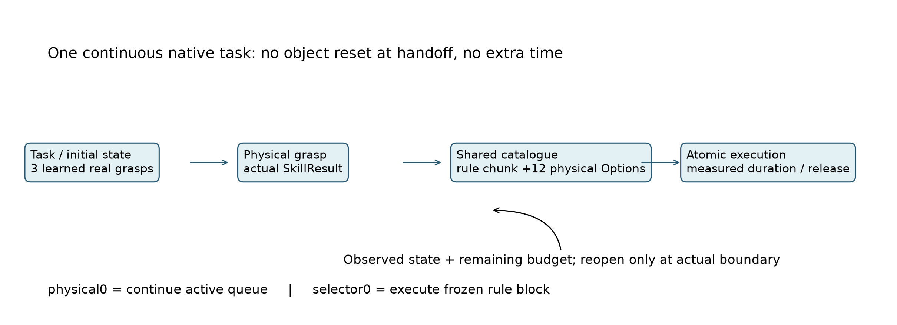
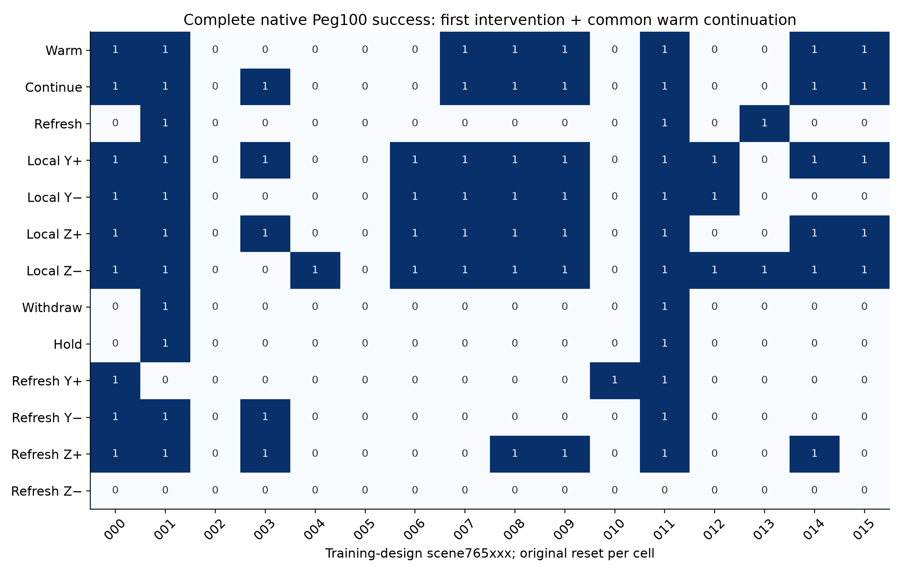
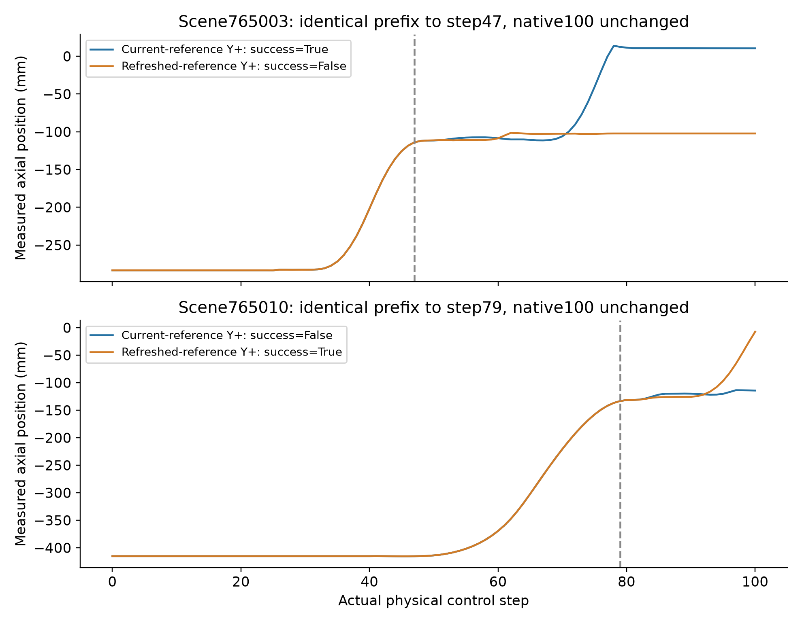
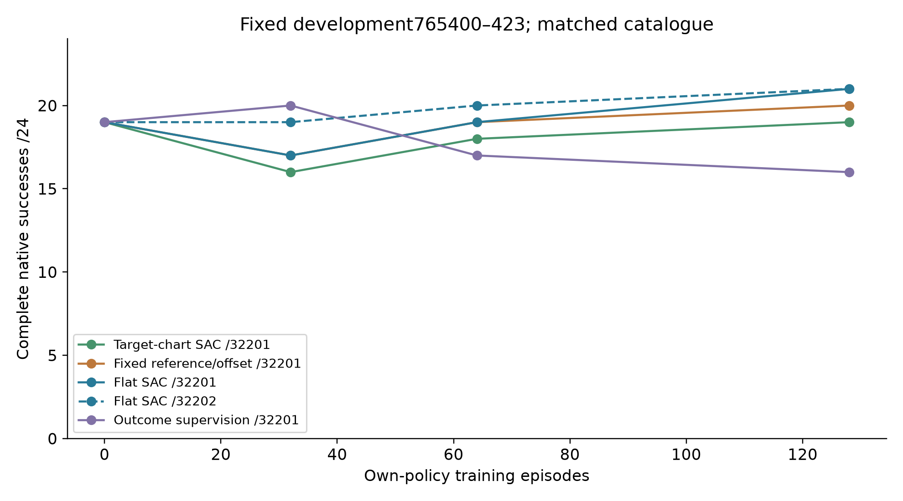
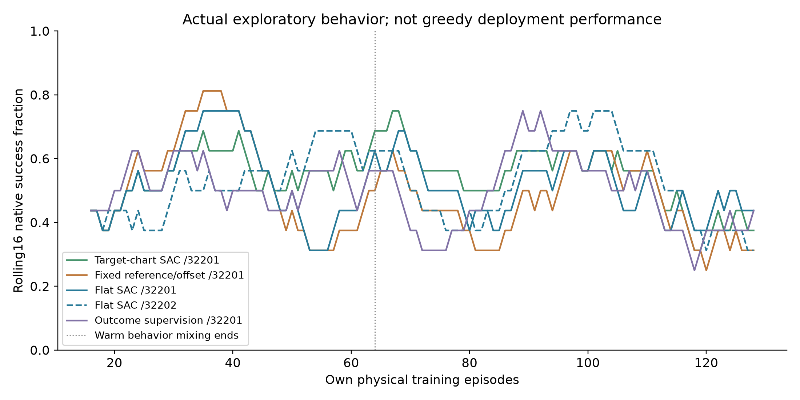
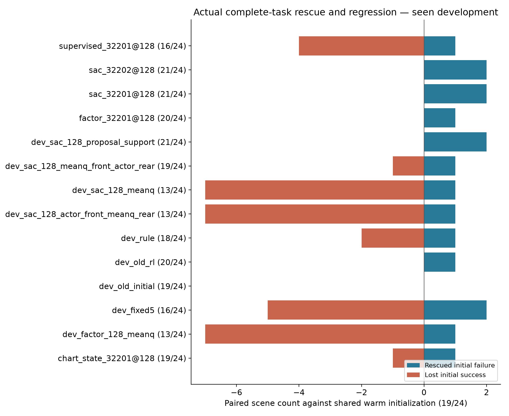
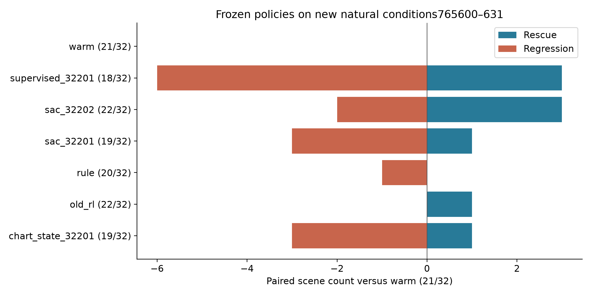
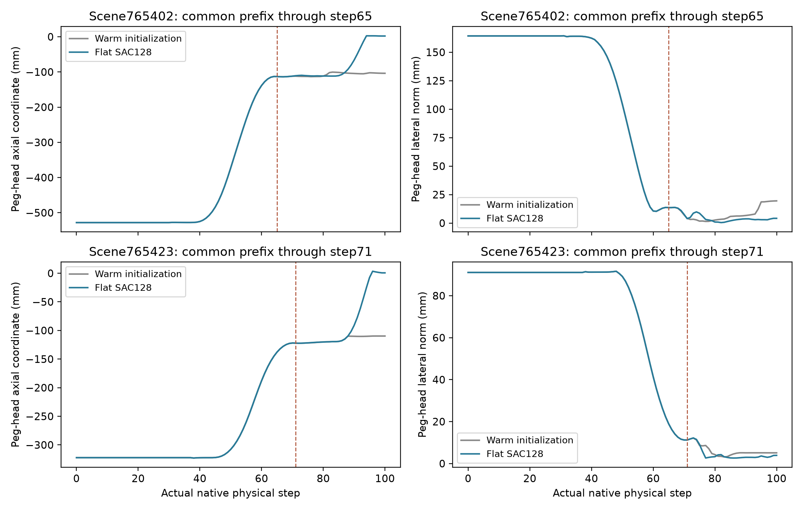
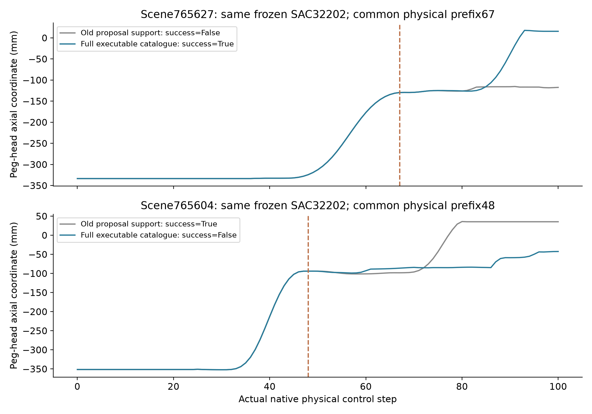

Native Peg100Real PhysX executionNo physical robot motion可执行动作机会 → 实际在线技能学习
ARES SCI · 2026-11-07 · c50123e continuation
保留强控制器、真实抓持、原生100步和成功判据。先检查有限动作机会，再训练同权限的普通RL、监督对照与可证伪的表示候选。
研究结论 · 论文与源码对照 · 机制与反例 · 复算结果 · 原始证据 / SHA
已完成的实质研究
256次设计物理执行后，完成5个128回合own-policy训练：普通SAC两种子、两版表示候选、终局监督评分。固定最终检查点，保留全部中途退化。
冻结新自然初态：chart_state_32201 19/32；old_rl 22/32；rule 20/32；sac_32201 19/32；sac_32202 22/32；supervised_32201 18/32；warm 21/32
两种子在已看开发集同为21/24并不保证泛化一致；动作目录机会、坐标计算准确与独立方法增益分别判断。
必须保留的证据边界
动作并集不是部署策略分数；当前开发场景已看。冻结新条件确认也不是密封测试。普通SAC、动作参数化、核函数和状态条件化关系均有成熟先例，候选优势必须由同权限实际执行及消融支持。
初始化勘误：旧31901/31902初始Actor/Critic相同，只有探索随机性不同。本轮在加载预热资产后重设网络种子，历史分数不改。
新动作使用不等于救回原因：765402在第93步已成功，随后第94步的Z−不能直接获记救回信用。冻结提议权限消融与所有失败均保留。
Seen development ·765400–765423
救回/退化相对同一预热初始化19/24。每个新学习臂显示其已完成的固定终点；全部中间checkpoint见学习曲线和JSON。
Frozen new-condition confirmation ·765600–765631
以下仅显示实际已执行结果。空表意味着仍保留未开启；不能用开发分数补填。
Post-hoc catalogue-support ablation
同一32场景现已看：冻结两个SAC模型，仅限制旧提议动作支持；不是重新训练或新的独立确认。
Own-policy physical training
各臂额外共享256次原生设计回放；不能把共享数据成本当作零。网络优化在CPU、物理仿真在单张本地RTX3080。训练随机行为成功与贪心部署成功分开统计。
Continuous real grasp → SkillResult → recurrent executable Options
PDF
Measured finite action frontier: training-design only
PDF
Same signed offset, opposite reference-dependent outcomes
PDF
Fixed checkpoint deployment; no retrospective best selection
PDF
Exploratory physical training behavior, separate from deployment
PDF
Paired rescue and regression on seen development
PDF
Frozen natural-condition confirmation
PDF
Two complete native trajectories; identical physical prefixes
PDF
Expanded support: new capability and harmful intervention, same frozen policy
PDF
New natural condition: scene765625
Frozen ordinary SAC32202 rescues a warm failure. Same actual physical prefix through step64. This is real native execution evidence visualized as MEASURED_STATE_REPLAY, not a novel-algorithm claim.
Complete RAW · Frame-synchronized curves · Source SHA
Observed SAC rescue: scene765423
101 recorded frames, original native execution. Visualization is MEASURED_STATE_REPLAY with zero new physics; it is not independent method validation. The retained historical RL also rescues this scene; this is not exclusive new capability.
Complete RAW · Frame-synchronized curves · Source SHA
Negative mechanism evidence: scene765416
Identical actual prefix through step68. The chart candidate misses a useful local Y+ intervention and fails; flat SAC retains success. MEASURED_STATE_REPLAY, zero new physics.
Complete RAW · Frame-synchronized curves · Source SHA
Design-only opportunity
16个自然初态，256次完整重执行。Warm8/16、设计集最佳固定动作12/16、有限实测并集14/16。不是全局上界，也未证明必须联合改变两个技能。
Actual cost and failures
{
"unique_native_episodes": 1882,
"physical_steps": 188200,
"planning_queries": 16027,
"planner_wall_s": 77.25510042638052,
"summed_episode_wall_s": 11657.309060874511,
"shared_design_episodes": 256,
"startup_failed_episodes": [
"/home/andyee/robot-research/ARES-Skilllab/runs/research_program/EXP-004/action_frontier_20261107/sac_32201/physics/00025_765100_train_0.json.gz",
"/home/andyee/robot-research/ARES-Skilllab/runs/research_program/EXP-004/action_frontier_20261107/factor_32201/physics/00025_765100_train_0.json.gz"
],
"accounting": "Unique run cost includes design, every evaluation, and two startup failures. Each learner also consumed the common 256-episode design replay. Inherited pretraining is separately pinned, not free online interaction."
}两次采样启动故障的200物理步计入总成本，未加入有效学习经验；原始故障文件和修复说明均保留。耗时是累计执行时间，不是并发后的墙钟历时。